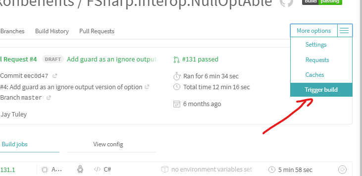

Trigger a Travis-CI rebuild without pushing a commit?
Using Travis-CI, is it possible to trigger a rebuild without pushing a new commit to GitHub?
Use case: A build fails due to an externality. The source is actually correct. It would build OK and pass if simply re-run.
For instance, an apt-get fails due to a package server being down, but the
server is back up again. However the build status is "stuck" at "failed" until
a new commit is pushed.
Is there some way to nudge Travis-CI to do another build, other than pushing a "dummy" commit?
Answer
- If you have write access to the repo : On the build's detail screen, there is a button ↻ Restart Build. Also under "More Options" there is a trigger build menu item.
Note : Browser extensions like Ghostery may prevent the restart button from being displayed. Try disabling the extension or white-listing Travis CI.
Note2 : If .travis.yml configuration has changed in the upstream, clicking
rebuild button will run travis with old configuration. To apply upstream
changes for travis configuration one has to add commit to PR or to close /
reopen it.
- If you've sent a pull request : You can close the PR then open it again. This will trigger a new build.
Restart Build:

Trigger Build:

Suggest
If you open the Settings tab for the repository on GitHub, click on Integrations & services, find Travis CI and click Edit , you should see a Test Service button. This will trigger a build.